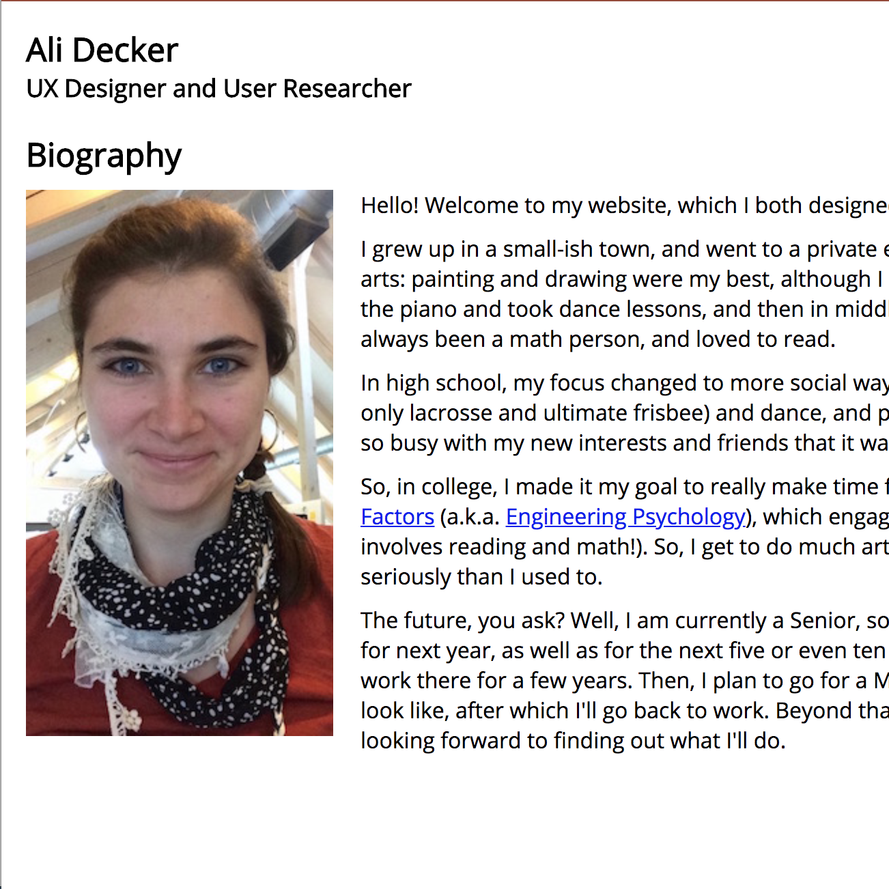
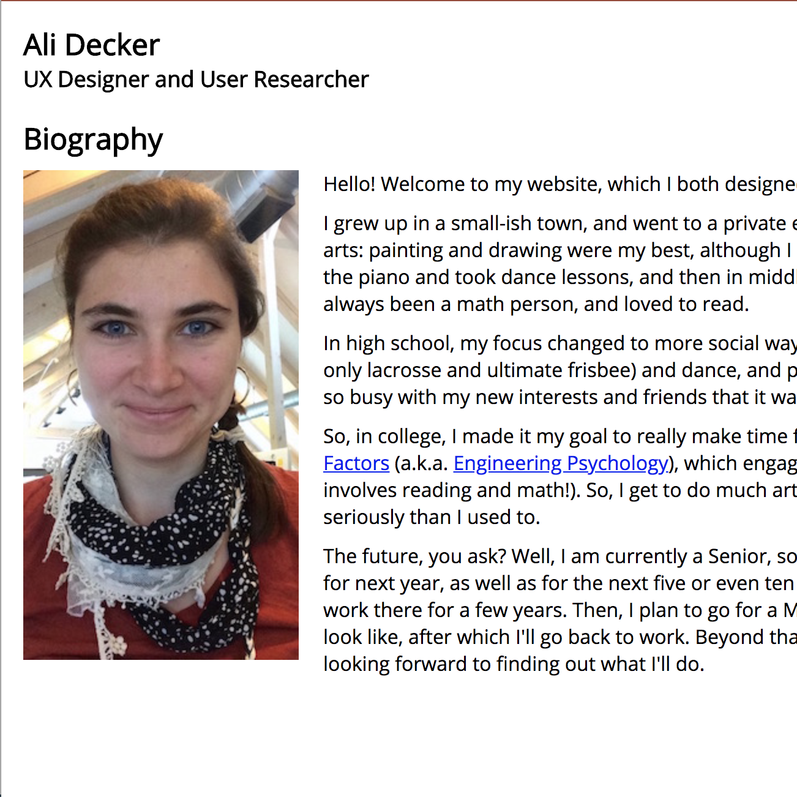

< Back
I designed and coded this website myself in HTML, JavaScript, and CSS. I built most of the pages during the Web Development course at Tufts University, and completed the Portfolio page (this page) outside of class on my own. At the advice of an expert UX designer, I later redesigned and recoded the site.
 


Initially, I decided to use a filtering system so that site visitors could choose to view only the projects that were relevant to their interests. However, the underlying issue of decluttering was better solved by presenting less text on the Portfolio page and by presenting project details on separate pages rather than in-line on the Portfolio page.

To explore what my revised website should look like and how it should navigate between pages, I mocked up and three different designs in Google Slides and hyperlinked them to make simple prototypes.
< Back